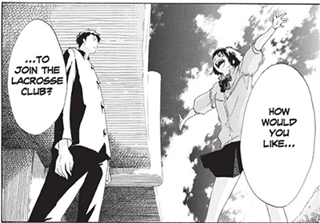
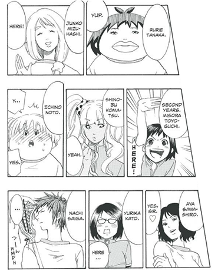

Book Review: Cross Manage by KAITO
by Katherine Picazo
Published October 4, 2016
Summary: Sakurai is a 2nd year high school student who fears he’s become someone who just coasts through life (“a red bean bun without the beans”). He’s smart and picks things up easily, but he can’t seem to develop a passion for anything anymore, not after a knee injury forced him to give up a promising high school soccer career. That all changes when he meets Misora Toyoguchi, captain of the Fujioka Girls’ Lacrosse Club. They clash on their differing opinions about sports: Toyoguchi thinks you don’t need to be any good at a sport as long as you enjoy it, but Sakurai disagrees and thinks it’s all pointless unless you play to win. After he reluctantly coaches her on how to hit a target, she’s struck with an idea: he should join the Lacrosse Team as their manager!
I’m trying to think of a single thing I don’t like about this comic and I’m coming up short. Everything about Cross Manage is delightful: the writing, the art, the humor, and most importantly, the characters. With all the crazy sports stuff going on–the grueling training sessions, the reluctant teammates, the rivals and the detractors–the bond between Sakurai and Misora is the glue that holds everything together. And it’s through this central relationship that Kaito explores some important questions: Is it possible to find purpose again after a great loss? Can hard work and determination trump innate skill? How far can one’s limits be pushed to achieve greater things?


The secondary cast is just as entertaining as our main pair. A sports manga will inevitably have a shit ton of characters; it’s just part of the territory. And it can get pretty unwieldy. Fortunately, Kaito has a real talent at characterization – all his characters are likable and all have their own charms and quirks to distinguish themselves from one another. I really enjoyed the character designs for all the lacrosse players:
So yeah… I can’t help but wonder why Cross Manage was so unpopular at the time of its serialization. Were Jump readers just not into lacrosse or something? Did Kaito take too long explaining the mechanics of the sport? Maybe. It takes four chapters to get to the “action”, that is, actual scenes depicting lacrosse in play, and another chapter or two after that to explain some of the rules of the game. Maybe readers got impatient for the action and weren’t as charmed as I was by the character work in the early chapters.
Or maybe young dudes reading Jump didn’t like that Sakurai was the team manager–a supporting role normally filled by girls–and not the star of the lacrosse team himself? Who knows for sure? I can only speculate. These narrative decisions might have been a little risky, but I thought they were a breath of fresh air for a WSJ title. The writing is so good I’m still a little stunned that this was his first published title.
How’s the Translation? I think Cross Manage is one of Viz’s better efforts. The dialogue is fun and full of energy, and it reads very naturally, like it’s actual teenagers talking to each other. And there are a lot of funny moments here that remain funny in English thanks to the clever writing. There are no honorifics and there are no footnotes at all. Overall it feels like little adaptation was needed for a North American audience.